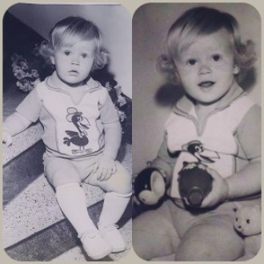
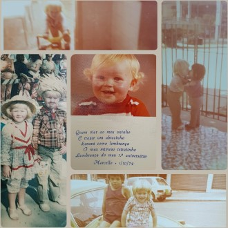
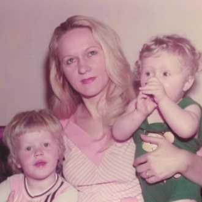
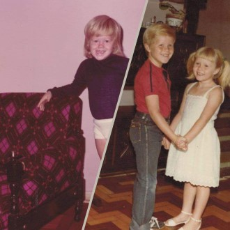
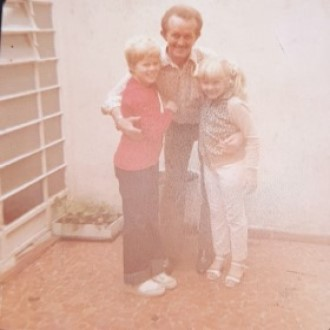
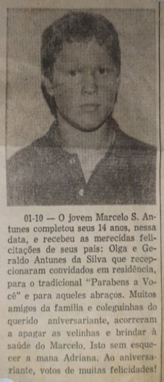
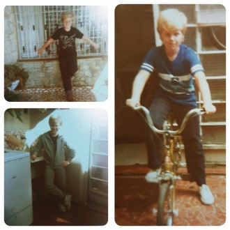
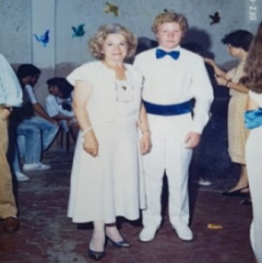

Fases da Vida #Inicialização

Oi.. Sou Marcello Sakalauskas Antunes, nasci em 01/10/1973 (Sampa), esses são os Primeiros passos de uma longa jornada.

Momentos que devemos ter orgulho do amor e carinho recebido dos nossos pais, boas recordações..

Ainda bem que temos as fotos, registros que nos permite recordar.

Fundo do baú.

Sempre com AMOR e carinho.

Presente do amigo Salim, publicação no jornal da Gazeta Penhense (1987).

Pagando de gatinho !!

Formatura da 8ª Série, Dona Terezinha (Diretora).